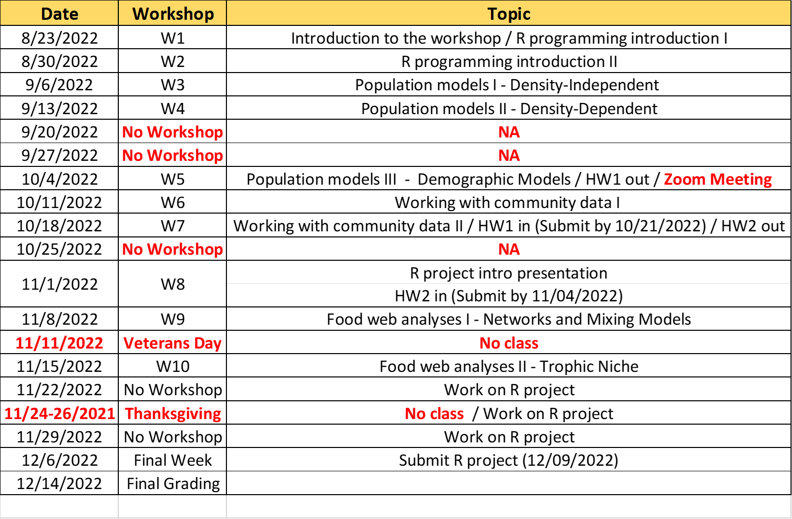

Fall 2022
Tuesdays 1 - 2:15 pm
Format:
- In-person + Face-to-Face: BBC MSB 112
- Remote: Zoom
link
Rolando Santos
rsantosc@fiu.edu
(preferable; include BSC6926 in subject line)
O:305-919-4104
Office: MSB 353 (when in BBC), OE-148 (when in MMC)
W. Ryan James
wjames@fiu.edu
(preferable; include BSC6926 in subject line)
Nathan Dorn
ndorn@fiu.edu
(preferable include BSC6926 in subject line)
O: 305-919-4234
Office: MSB 351
This workshop is connected to PCB5423 course, and it will be a co-requisite and will be offered to students enrolled in this course. The workshop is designed to provide an active learning experience by analyzing and illustrating several of the topics that will be discussed in PCB5423 by using ecological models and analytical tools. Specifically, R programming language will be used to learn and implement ecological models and analytical tools and discuss ecological fundamentals using quantitative examples. R is becoming one of the most used programming platforms to analyze and illustrate ecological patterns/data; thus, we hope to introduce novice and beginner coders to this fantastic programming language.
In-Person Sessions: Lectures and hands-on programming/modeling exercises will be an integral part of the workshop’s learning experience; thus, most sessions will be based on face-to-face meetings to facilitate learning and assistance during the workshop sessions. In-person sessions will be offered only at BBC.
Remote Lectures: I will use Zoom to teach remotely if our face-to-face class cannot meet as regularly scheduled. I will contact you using CANVAS and email about Zoom link details. Also, I will use Zoom for remote lectures during days I expect to be out of town for fieldwork or meetings. I will announce any changes to the schedule one week or more in advance.
Office hours: Tuesdays and Thursdays, 3:00 – 4:00 pm, or by appointment. Please request a Zoom link by email or pass by my office for office hours meetings. I am constantly in/out of my office since my lab spaces are not in MSB; thus, please send me an email or talk to me after the workshop lectures to set up a meeting at my office.
Changes to this schedule and other announcements regarding the course will be posted in CANVAS (sent FIU email addresses only).

Textbook for R exercises (S) Stevens, M.H.H. 2010. A primer of
ecology with R. ISBN 978-0-387-89881-0 (Electronically available at FIU
Library)
E-book version: https://hankstevens.github.io/Primer-of-Ecology/
Other learning materials: required R scripts/files and readings for the workshop exercises will be posted to CANVAS and the workshop website https://pcb5423.github.io/.
Please bring a laptop to class so you can follow the R scripts during class and perform workshop exercises. Please, contact us if you do not have access to a laptop
R and R studio are free software environment for statistical
computing and graphics required for the workshop. Please download it to
your laptops:
Download R: https://cran.r-project.org/bin/windows/base/
Download Rstudio: https://www.rstudio.com/products/rstudio/download/
Materials and links on R programming and statistical analyses helpful in learning R and the workshop exercises/homework/project
A lectures and R programming exercises will be part of each workshop session to introduce several topics on population and community modeling and analyses and provide context to the ecological fundamentals taught in PCB5423. The grade will be based on participation, homework exercises, and final project (see below).
The final grade will be composed of 3 assignments/tasks. These three assignments/tasks are: 1) Class participation (attendance and class exercises), 2) R exercises homework, 3) R Project.
Class participation (Total 10 pts) will count for 20% of your final grade. This grade will consist of attending class (0, 1) and participating in class discussions and exercises (0, 1). Class discussion includes asking and answering questions, insightful comments and suggestions, and helping peers.
R homework exercises (Total 50 pts – 25 pts/hw) will count for 40% of your grade. After several R “lab”/workshop sessions, students will turn in an assignment showing proof that they ran some of the code in R and understood the outputs of the models. The programming/coding aspect of the homework can be completed as a collective effort of student teams; however, students should independently answer and submit the homework questions. Please, submit homework answers as pdf or word document and the R files showing the code used to answer the questions.
R project (Total 50 pts) will count for 40% of your final grade. Groups will be formed with 2-3 students, and each group will submit a report showing a population and/or community-based modeling/analysis approach applied to a selected ecological dataset or simulated data. The modeling or analysis idea should be derived from a research question inspired by any topics discussed in class and the workshop sessions. The report should not be longer than five pages. Within five pages limit, students should include an introduction section that lays out background information that sustains or contextualize the research question, a methods section with details on the dataset and modeling technique/analyses used, and results/discussion section that summarizes and explains the main results. The grade will consist of the introduction presentation (10 pts), the final report (35), and R code file (5 pts).
Grade scale is: A: 100-90; B: 89-80; C: <79. This is a graduate-level workshop; thus, if you are taking this course is because you have a genuine interest in ecological learning and developing your academic career. For this reason, I think final grades should be pass (A or B) or no pass (C). I will be somewhat lenient to allow for critical thinking, creativeness, and thoughtfulness. Whether you receive an A or B will depend on how well you do in the final report and how often you attend class and participate. I will give students a C (or less) who didn’t commit to the work.
Students will be graded on their performance in the above areas ONLY. Future career plans will have ZERO influence on the grade you receive in this class. Incomplete grades will be considered only under extraordinary circumstances.
I will provide make-up opportunities only when students present valid
excuses (e.g., medical/family emergencies, COVID-19 related emergency
and precaution, major fieldwork trips, or conferences). Regardless of
the reason, please contact me to identify alternative methods for
completing course requirements, depending on the type of assignment
missed and the severity of missed assignments. Below is a guideline of
potential make-up scenarios/methods (Subject to change): -
Participation – Due to the limited number of sessions, I will
provide a participation point for only one missed session with a
validated and accepted excuse. - Homework – Make-up
alternatives only for medical (including COVID-19) emergencies. The
make-up will consist of submitting the homework materials at a later
date (e.g., 48-72 hours after the submission deadline), depending on the
gravity of the emergency.
- R project - No make-up alternatives for this assignment. An
incomplete final grade will be submitted if, for some acceptable
reason/excuse, a student can’t finish and submit the R project
report.
Florida International University (the University) is committed to encouraging and sustaining a learning and living environment that is free from discrimination based on sex, including gender, gender expression, gender identity, and sexual orientation. Discrimination based on sex encompasses Sexual Misconduct, Sexual Harassment, Gender-Based Harassment, Domestic Violence, Dating Violence, and/or Stalking.
FIU is committed to eliminating sexual harassment. In accordance with the FIU Faculty Senate guidelines, this syllabus includes a warning that any misconduct will be reported. FIU’s sexual harassment and misconduct regulation is available at: https://regulations.fiu.edu/regulation=FIU-105
Students are encouraged to employ critical thinking and rely on data and verifiable sources to interrogate all assigned readings and subject matter in this course as a way of determining whether they agree with their classmates and/or their instructor. No lesson is intended to espouse, promote, advance, inculcate, or compel a particular feeling, perception, viewpoint, or belief.
FIU is a community dedicated to generating and imparting knowledge through excellent teaching and research, the rigorous and respectful exchange of ideas, and community service. All students should respect others’ right to have an equitable opportunity to learn and honestly demonstrate the quality of their learning. Therefore, all students are expected to adhere to a standard of academic conduct, which demonstrates respect for themselves, their fellow students, and the University’s educational mission. The University deems all students to understand that if they are found responsible for academic misconduct (e.g., cheating, plagiarism, academic dishonesty), they will be subject to the Academic Misconduct procedures and sanctions, as outlined in the Student Handbook.
FIU defines academic misconduct in the Student Conduct and Honor Code (Code) as “any act or omission by a Student, which violates the concept of academic integrity and undermines the academic mission of the University in violation of the Code.” Code violations include, but are not limited to: academic dishonesty, bribery, cheating, commercial use, complicity, falsification, and plagiarism. The Code is available here: https://studentaffairs.fiu.edu/get-support/student-conduct-and-academic-integrity/student-conduct-and-honor-code/index.php